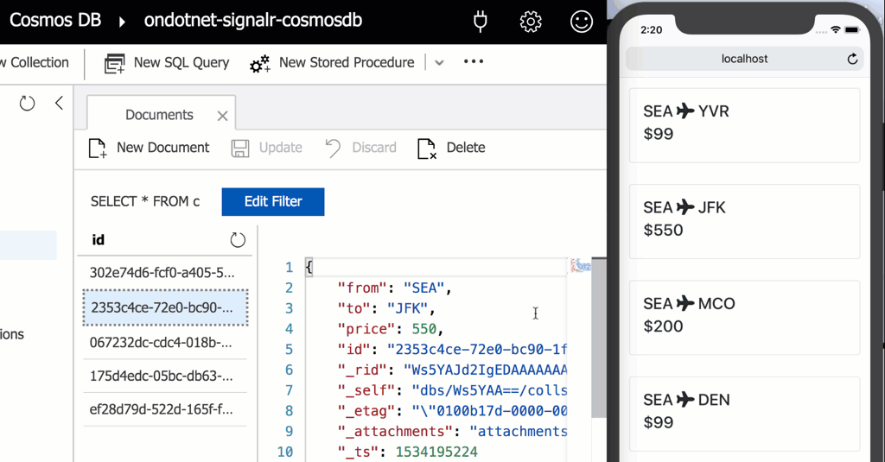
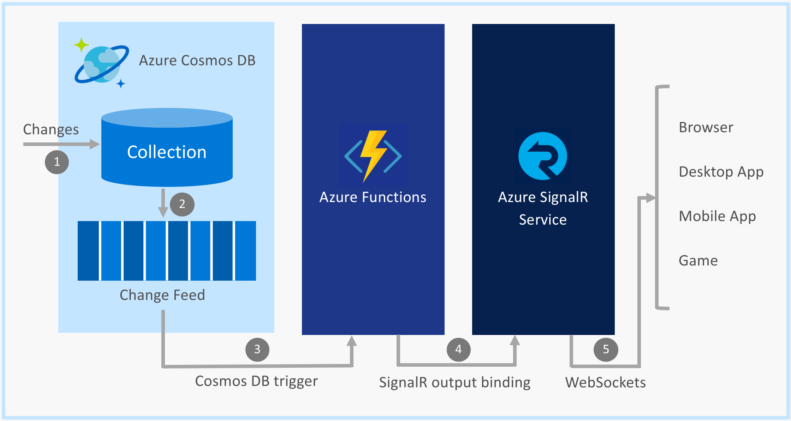

遇到了客户一个非常有趣的需求，他希望Cosmos DB中一个表中某条记录更新的时候，自动通知到应用服务， 再由应用服务通知到客户端。这种需求跟传统的HTTP–SERVER的相应模式完全不一样。传统的模式是，客户端主动发起请求，然后server将结果返回给客户端。
现在的需求是server主动将结果发送给客户端，做到实时性。主动发送结果客户端这一点，通过ASRS可以实现。但是这个scope仅限于运行ASRS SDK的应用服务. 客户的要求更进一步，dataflow的开始起于数据库里面某条记录的更新。这就要求DB把这个更新先通知给应用服务，再由应用服务通知给客户端。做了一些调查之后，我发现Cosmos DB Change Feed + Azure Function + ASRS可以实现这一点。
需求
先来看一下效果。

这里的Demo演示的是一个订机票的系统。在左侧的Cosmos数据库修改一张机票的价格之后，立刻这个价格的改变立刻显示在了用户的手机上。这里面是手工修改了数据库。想象的更远一些，可以认为在另外一端，有个后台系统是用来管理机票价格。这后台系统跟现在看到的这个订票系统没有业务逻辑层的解耦合。一旦票价有了改动，Cosmos就会向订票系统的应用服务发出通知。应用服务得到通知后，会主动向其客户端（手机，电脑，浏览器）发送消息，从而实现实时的信息更新。
架构设计
这个架构里面涉及了几个部分：
- Cosmos DB。数据是在Cosmos里面存储，并且被修改的。
- Cosmos DB change feed。数据更新之后会被自动的记录到Cosmos DB change feed中。
- Azure Function。Azure Function是一种在Azure中运行小块代码或“功能”的轻量级解决方案。订票系统的业务逻辑就跑在这个上面。同时也用来承载Cosmos DB Trigger和SignalR Service output binding.
- Cosmos DB Trigger。通过在Azure Function中使用Cosmos DB Trigger, 当Cosmos DB change feed 由记录的时候，Azure Function的对应的method会被调用。从而可以走到我们的逻辑代码中。
- SignalR Service output binding。在Azure Function 中通过使用SignalR Serice output binding可以在实时的向ASRS发送消息。
- Azure SignalR Service (ASRS)。ASRS在是作为real-time通知到客户端中的重要一环，他负责将消息实时的发送给所有的客户端。
- SignalR Client。目前client端支持几种语言，ASP.NET, ASP.NET Core, JavaScript, Java。

Service
在这个架构中应用服务运行在Azure Function App上面。Azure Function App一方面使用 Cosmos DB Trigger来接收Cosmos的内容变更，另外一方面， 使用Azure SignalR Service SDK向ASRS发送消息。
JavaScript :
整个solution参考cosmosdb-signalr-realtime-updates。主要的功能实现是OnDocumentsChanged。
在function.js中，我们定义了2个bindings:
- Cosmos DB trigger - 当Cosmos的flight collection有数据变更的时候，这个funciton就会被执行
- SignalR Service output binding - 这个function用来将输出的消息传递到SignalR Service Hub上。
1 | { |
Cosmos DB trigger需要通过Functions Core Tools CLI进行安装。
1 | func extensions install -p Microsoft.Azure.WebJobs.Extensions.CosmosDB -v 3.0.1 |
在Azure Function上面启用SignalR Service output binding参考这里Azure Functions development and configuration with Azure SignalR Service 。
这个function的逻辑就是将修改的内容，直接传递给SignalR Service message objects。然后又ASRS调用客户端的flightUpdated method, 将这个消息通知给客户端。
target - The name of the method to invoke on each client
arguments - The arguments to pass to the method
1 | module.exports = async function (context, updatedFlights) { |
C# :
下面是C#的代码，实现同样的功能。
1 | [] |
CosmosDBTrigger attribute 是用来监听Cosmos的flights collection的内数据变化。当数据发生变化的时候，就会trigger这个function，变化的参数会传递到updatedFlights这里。
这个function使用SignalR output binding,将消息输出到SignalR Service hub flights 上面。然后invoke 客户端上的method flightUpdated,传入的值在Arguments里面。
A SignalR Service message 包含下面两个 properties:
Target - The name of the method to invoke on each client
Arguments - The arguments to pass to the method
Client
下面代码是用JavaScript来实现，当然也可以使用C#来实现的。
1 | connection.on('flightUpdated', flightUpdated) |
更多的内容可以参考 index.html
参考内容
Broadcast Real-time Updates from Cosmos DB with SignalR Service and Azure Functions
Source Code